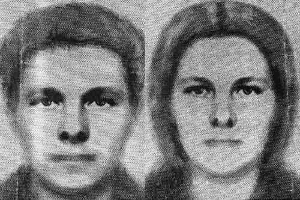

Андрей Борцов (Warrax)
Русская кровь
|
Можно побиться об заклад, что любое ходячее мнение, любая общественная условность глупы: в противном случае они не были бы общепризнаны. Н. Шамфор |
Выражаю глубокую признательность сайтам "Велесова Слобода" и "Русколань" , издательству "Белые Альвы" и лично В.Б. Авдееву, чьими материалами я пользовался при написании этой статьи.
Вряд ли кто из читателей не слышал расхожей поговорки «поскреби русского — найдешь татарина». Точка зрения «чистокровных русских не существует» давно известна и широко поддерживается русофобами всех сортов. Например, Альфред Розенберг в своем «Мифе XX века» объяснял русскую историю очень просто: «кровь с монгольской примесью вскипала при всех потрясениях русской жизни», а большевизм «означал бунт монголоидов против нордических форм культуры». Видите, как все удобно: сразу видно, что русские — унтерменши.
ЛЮБИТЕЛИ ПОСКРЕСТИ
Но и до, и после Розенберга рассуждения о «нечистоте русской крови» всегда были в арсенале русофобов. При этом всегда подчёркивалось как происхождение русских от самых «низших рас», которые удавалось найти в списке, так и «смешанность кровей», «неустойчивость русского типа», который тем самым объявляется чем-то худшим, чем даже его составляющие.
Интересно, что подобные русофобские экзерсисы у самих русских не вызывают резкого отторжения: ну и что, чистый или не чистый? Еще и Пушкина с предком-арапом как пример приведут, а те, у кого эрудиция побольше, вспомнят про Даля — у того вообще русских предков не было, а какой словарь составил! Наличие чужой крови в русских венах считается чуть ли не за достоинство. Более того, русские зачастую бравируют такой терпимостью. «Главное — чтобы человек был хороший».
Подобной позиции придерживались не только открытые враги русских, но и многие — скажем так — мыслители из самой русской среды. В этом вопросе они почему-то проявляли редкостное самоотречение. Например, Константин Леонтьев измыслил такую вот сентенцию: «Что такое племя без системы своих религиозных и государственных идей? За что его любить? За кровь? Но кровь ни у кого не чиста. И что такое чистая кровь? Духовное бесплодие. Все великие нации очень смешанной крови». Последовательно развивая идею, он — русский философ! — договорился до призыва верить в «плодотворность туранской примеси в нашу русскую кровь». А на памятнике Льву Гумилеву, установленному в Казани, начертано: «Я, русский человек, всю жизнь защищал татар от клеветы…» При этом этот самый русский человек в своих книгах совершил потрясающее открытие: оказывается, великороссы произошли в результате «широкой метисации славянского, тюркского и угорского населения Восточной Европы».
Причину такого поведения рассмотрим позже. А пока озвучим все данные для образования цельной картины.
Перед тем, как зарыться в цитаты из научных трудов и исторических хроник, логично ответить на вопрос — почему вообще генетика («чистота крови») имеет какое-либо значение?
К ВОПРОСУ О ЧИСТОТЕ КРОВИ
Поясню сначала на примере рас. С тем, что представители разных рас имеют разное распределение способностей, думаю, никто спорить не будет. Скажем, негры статистически бегают быстрее белых, а также лучше играют в баскетбол и т. д. — возражений нет? А вот соревнования по стрельбе выигрывают белые, как и чемпионаты мира по шахматам. При сравнении национальностей, принадлежащих к одной расе, разница не столь существенна, но она есть. Словосочетание «национальный характер» отнюдь не бессмысленно — и он определяется не только средовым фактором, но и генами. Конечно, не в виде готовых паттернов поведения, а в виде тенденций — эмоциональность, динамичность, рациональность и т. д. При этом генный комплекс, сформировавшийся у нации, отвечает ареалу проживания нации, климатическим условиям и так далее. Можно возразить, что в наше время развитие техники позволяет не обращать на все это внимания. Но дело не только и не столько в природных условиях (которые в городской жизни вообще не имеют особого значения), а в том, что этот самый характер подразумевает десятками веков формировавшееся коллективное бессознательное, специфика которого также различна для разных национальностей. Проще говоря: генетика и психика всегда связаны между собой. Это не обязательно значит, что вся психика определяется генетически, но имеется корреляция между генотипом этносов и их менталитетом как минимум.
Каждая национальность — уникальна. И от смешения ничего полезного ждать не приходится: такое ни к чему хорошему никогда ещё не приводило. Тезисы об «отсутствии инбридинга», «свежей крови» и так далее имеют значение только для очень маленьких народов, живущих компактными группами без возможности постоянного общения друг с другом (поэтому у них и выработались традиции типа «предложить в постель гостю дочь/жену», совершенно неприемлемые для европейцев).
Ещё проще всё объясняется на «бытовом уровне». Есть такая наука — этология, которая занимается вопросами проявления бессознательных стереотипов поведения у животных и у человека. Эволюция просто не могла не выработать опознавательную систему «свой/чужой» для всех живых существ, иначе те, у кого такой системы нет, просто не дожили бы до наших дней. При виде чужого в мозг идет соответствующий сигнал — и как его не подавляй интеллектуально, ментальные побуждения все равно будут слабее бессознательных. Идеи же о «братстве всех людей на Земле» — изобретение весьма недавнее. Помните фильм «Брат», эпизод с контролером? Очень характерные фразы — обращение к герою фильма как к брату, т. е. попытка выдать сигнал: «я все же свой», и четкий ответ: «Не брат ты мне».
Очень разные люди могут работать в одном небольшом коллективе, решая общую задачу и расходясь после работы по домам. Но для того, чтобы жить в социуме, причем жить эффективно и комфортно, составляющие этого социума должны иметь общность между собой. Она не подразумевает унификации в пресловутые «винтики», нивелирования личности, стирания индивидуальности и прочих идеологических страшилок от сторонников «атомарного общества». Это именно естественная общность, не на ментальных конструктах, а на куда более древних и сильных.
В качестве примера (правда, «расового характера», а не национального, но принцип тот же) приведу монографию лауреата Нобелевской премии по физике профессора Иоганнеса Штарка «Национал-социализм и наука», в которой он выдвинул тезис, что только для представителей нордической расы научный поиск имеет самостоятельную психологическую ценность, а не является средством своекорыстных спекуляций, как для представителей южных рас, испытывающих неподдельный восторг от бесконечного сидения на шумном и грязном базаре.
Позволю себе процитировать отрывок из ранней статьи: «…влияет также этическая и психологическая несовместимость. Этот феномен двусторонний: ценности одной группы не уважаются (а часто — презираются) другой группой; понятно, что достигнуть взаимопонимания практически невозможно. Бытовой пример: когда я захожу на рынок, очень часто можно на вопрос о цене услышать что-то вроде: «Стоит — 100, отдам за 90, а лично тебе, дарагой, за 80!». При этом продавцу, как представителю южных народов, нравится торговать и торговаться; умение торговаться там — это искусство. Для меня же, как индивида с имперским менталитетом, торговаться — ниже личного достоинства».
Жозеф Артюр де Гобино писал: «Для азиатских философов истинная мудрость заключается в том, чтобы подчиняться сильному, не противодействовать неизбежному, довольствоваться тем, что есть. Человек живет в своих мыслях или в своем сердце, он приходит на землю, подобно тени, проходит по ней равнодушно и покидает её без сожаления. Мыслители Запада не проповедуют такие истины своим ученикам. Они призывают их вкушать земное существование в полной мере и как можно дольше. … Семитская философия делает из богатой земли пустыню, чьи пески, каждодневно наступая на плодородную почву, вместе с настоящим поглощают и будущее. Противоположная ей арийская доктрина гласит: борозди землю плугами, а море кораблями, затем, в один прекрасный день, презрев разум с его призрачными радостями, сотвори рай здесь, на земле и в конце концов, сойди в неё».
Отрыв от национальных корней обозначает «всего-навсего» разрыв со своим бессознательным, что делает невозможным процесс обретения самости и становление личности, а далее — превращение в «Ивана, родства не помнящего», — готовый винтик общества потребления, бездумно принимающий внушаемые рекламой паттерны модели за отсутствием естественных «иммунных барьеров» своей культуры.
Этические принципы (менталитет нации) не могут быть «перечислены списком» — они относятся к «неписаным законам». И, что очень важно, этика работает досознательно. Затронутая тема очень интересна, но формат газетной статьи вынуждает ограничиться наглядным примером. Из другой публикации («Мифы и правда о национализме»):
«Некоторые из современных националистов определяют принадлежность к нации не как «кровь и почва», а как «культура, язык, этика», что вызывает неприятие у других националистов. На самом же деле здесь нет противоречия.
Действительно, исходя из строго научных соображений, кровь (генетика) и тем более почва (место рождения) не являются строго определяющими факторами. Представьте себе нерусского по происхождению младенца (но всё же белой расы), с рождения воспитываемого «эталонными» русскими в какой-нибудь местности, заселенной ими, но формально принадлежащей не России. Очень вероятно, что средовой фактор здесь воспитает типично русского по менталитету — с нерусской кровью и почвой.
А теперь быстренько оторвались от глубокомысленных абстрактных измышлений и прикинули вероятность такого события. Сколько там у вас получилось, а?»
Объясню, почему было выставлено условие «всё же белой расы». Вовсе не потому, что я расист, а по вполне объективным причинам.
Представьте в тех же условиях негритенка. Свежерожденного, который с неграми никогда не общался. Получится ли из него русский? Нет, никогда. Воспитатели просто не смогут относиться к нему как к своему. Негры, знаете ли, живут в Африке, а не в России. А Русь испокон веков населена белой расой. Отношение к приемному негритенку может быть образцово-показательным, его могут даже искренне любить, но за своего его считать никак не будут. Дети, между прочим, очень хорошо чувствуют отношение к себе; психика же формируется с рождения, и большей частью её структура оформляется ещё в младенчестве. В самом лучшем случае в результате такого эксперимента получится «свой парень», у которого, как ни крути, будет подсознательное отношение к русским «они меня своим не признают, хотя относятся дружелюбно». Если же отношение к объекту эксперимента будет искреннее как к «своему», то это — по определению — будут не «эталонные русские», а «эталонные общечеловеки». Которые русского не воспитают даже из потомка сибиряков-староверов.
Отмечу и ещё один момент, уже не теоретического, а практического характера. Среди русских националистов очень многие придерживаются взглядов вида «кровь и почва». Их намного больше, чем нерусских по происхождению, стоящих на позиции русского национализма. Конечно, этическая проблема существует, но тем не менее наплевательская позиция к чистоте крови попросту не получит поддержки у значительной части националистов.
Ну и совсем уж «в лоб»: чтобы говорить о русских как о нации, нужно иметь эту самую нацию как единство, проверяемое научно (а это — именно генетика), а не просто вести разговоры о «русскоговорящих» и т.п.
Перейдем, наконец, к фактам. Вероятно, многим эта часть работы покажется попросту занудной и сухой. Но факты и должны быть сухими. Жидкими бывают только демагогические излияния.
Начнём с того самого занятия, которое многим «общечеловекам» кажется страшным — а именно, с измерения черепов. Этим занимается наука краниология, чья задача — изучение вариаций размеров и формы черепа и его отдельных частей.
Сошлёмся на книгу: В. П. Алексеев «Краниология народов Восточной Европы и Кавказа в связи с проблемами их происхождения» (Москва, 1967 г). В работе отмечено, что краниологические различия между группами русских не зависят от расстояния между ними: различия между территориально близкими сериями ничуть не меньше, чем между удаленными.
Антропологической экспедицией 1955-1959 годов, возглавляемой крупнейшим антропологом профессором В. Бунаком, были изучены более 100 групп великорусского населения. В. Бунак с помощью сопоставления данных по десяткам групп населения всей зарубежной Европы выявил минимальные и максимальные пределы значений антропологических признаков для этих групп. После установления тех же пределов для русских оказалось, что их значения имеют разброс в два раза меньше, чем для всего европейского населения. Таким образом, русские имеют значительную однородность в своей антропологической составляющей — при том, что территория их расселения весьма обширна. Что же касается средних значений антропологических признаков для европейских народов, то здесь русские по расовым свойствам занимают центральное положение. Это «самые типичные европейцы».
Тот же вывод делает В. Е. Дерябин в работе «Современные восточно-славянские народы» (М., Научный мир, 1999): «При сравнении же средних значений антропологических признаков для народов Европы и для русских выяснилось, что они по многим расовым свойствам занимают среди европейцев центральное положение. Это наблюдается по длине тела, размерам головы и её форме, высотным и широтным размерам лица и их соотношениям. Иными словами, по многим признакам русские являются самыми типичными европейцами. По пигментации глаз и волос русские в целом оказались светлее среднего европейского типа».
Согласно вычислениям ученого, светлые глаза (серые, серо-голубые, голубые и синие) у русских встречаются в 45%, тогда как средний уровень для зарубежной Европы — только 35%. Темные же глаза встречаются у 5% русских, тогда как у населения Европы — в среднем 45%. Темные волосы у русских встречаются в среднем в 14% случаев, тогда как у населения зарубежной Европы — в 45%. Не подтвердилось и расхожее мнение о курносости русских: в 75% случаев профиль носа — прямой.
В. В. Бунак, опираясь на данные геногеографического изучения Восточной Европы, пришел к выводу, что исходный «протославянский тип» весьма устойчив и своими корнями уходит в эпоху неолита, а, возможно, даже и мезолита. Академик В. П. Алексеев выделял крайнюю степень морфологического сходства всех краниологических серий современного русского народа. Все локальные местные варианты отклоняются весьма незначительно от единого расового типа, распространенного на огромной территории от Архангельска до Курска и от Смоленска до Пензы.
Ещё в 1837 году этнограф и историк Н. И. Надеждин заявил: «Физиогномия Российского народа, в основании славянская, запечатлена естественным оттенком северной природы. Волосы русые, отчего в старину производили самое имя Руси» (Следует заметить, что более логичной выглядит обратная ситуация: русый цвет волос взял название от Руси. Обратите внимание, что термин «русый» относится исключительно к волосам, и ни к чему иному).
АЗИАТЫ ЛИ МЫ?
Ну и что же у нас на тему «если поскрести, то…»?
Характернейшим признаком монголоидности является присутствие эпикантуса — складки у внутреннего угла глаза человека, образованная кожей верхнего века и прикрывающая слезный бугорок.
Н. Н. Чебоксаров, «Монголоидные элементы в населении Центральной Европы». Уч. зап. МГУ. — М. 1941. — Вып. 63: «У монголоидов он встречается в 70-95% случаев, но «из числа более чем 8, 5 тысяч обследованных русских мужского пола эпикантус обнаружили только 12 раз, к тому же только в зачаточном состоянии… Такая же крайне редкая встречаемость эпикантуса наблюдается у населения Германии».
Энциклопедия «Народы России», М., 1994 г., глава «Расовый состав населения России»: «По приблизительным подсчетам представители европеоидной расы составляют более 90% населения страны и ещё около 9% приходится на представителей форм, смешанных между европеоидами и монголоидами. Число чистых монголоидов не превышает 1 млн. человек».
Г.Л. Хить в работе «Дерматоглифика народов СССР» (М.: «Наука», 1983) приходит к заключению, основанному на тщательном анализе рисунков отпечатков пальцев: «установлено, что русские однородны в отношение кожного рельефа и являются носителями наиболее европеоидного комплекса наряду с белорусами…». При этом в своем исследовании Г. Л. Хить отмечает огромное отличие в дерматоглифическом материале русских, с одной стороны, и казанских татар, марийцев и чувашей, с другой.
Следовательно, ни о какой «метисации» русских с монголо-татарами с научной точки зрения речи быть не может. Сами подумайте: каким же образом русские с якобы монголоидной примесью оказались светлее волосами и кожей, чем западноевропейцы, до которых монгольское иго не добралось? Да и вообще — угнанные в полон русские девушки никак не могли добавить азиатские гены русским, наоборот — их дети оставались на территории захватчиков.
Отсутствие сколь-либо заметного смешения подтверждают и биохимические исследования. Вот, например, работа О. В. Ирисовой «Полиморфизм эритроцитарной кислой фосфатазы в различных группах населения Советского Союза» (Вопросы антропологии. Вып. 53, 1976): «Среди населения Европы отмечается относительно широкая дисперсия по трем аллелям: pha, phb, phc. В целом редко встречающийся ген phc служит характерным признаком, маркирующим европеоидные популяции (0, 030–0, 070). Аллель pha варьирует у европейского населения в пределах 0, 268–0, 402. У негроидных популяций частота pha изменяется в более узких рамках от 0, 16 до 0, 25. Монголоиды, как и следовало ожидать, имеют самый широкий спектр изменчивости аллелей pha и phb и, тем не менее, у них практически отсутствует ген phc». Миф о генетических последствиях монголо-татарского ига в России вновь терпит полный крах: у русских есть ген phc, а у монголов его практически нет.
Таким образом, теория о том, что расовой основой русского, а в равной степени и некоторых иных европейских народов является, бесспорно, нордическая раса, подтверждается вновь и вновь. Именно культуротворческим способностям нордической расы и обязана вся европейская цивилизация своим происхождением.
РУССКИЕ В НЕМЕЦКОЙ ПРОПАГАНДЕ
Иногда приходится слышать, что расология якобы считает русских недочеловеками (см. цитату Розенберга в начале статьи). Сторонники такого аргумента, видимо, преклоняются перед немецкими пропагандистами времен Третьего рейха и считают, что они непогрешимы, как папа римский ex cathedra. А если серьезно, то все проще: официальные идеологи любого государства работают на интересы этого самого государства. Поскольку было совершено нападение на СССР — то русских было необходимо представить как расово неполноценных; когда же в Великой Отечественной наступил перелом — в Waffen SchutzStaffel стали принимать чуть ли не всех подряд (чисто немецкими была лишь треть ваффен СС), были даже исламские подразделения (около 60 тысяч человек).
Если же прочесть сам «Mein Kampf», то там мы не найдем утверждений о расовой неполноценности русских. Да, Гитлер рассматривает русские просторы как земли для расширения расселения немцев, но он обосновывает это отнюдь не расовой неполноценностью, а сложившейся обстановкой. В других обстоятельствах, возможно, он даже рассматривал бы русских как союзников. Цитирую: «… ясно, что в один прекрасный день Англия должна была стать нашим врагом… Политику завоевания новых земель в Европе Германия могла вести только в союзе с Англией против России, но и наоборот: политику завоевания колоний и усиления своей мировой торговли Германия могла вести только с Россией против Англии»; «Современные владыки России совершенно не помышляют о заключении честного союза с Германией, а тем более о его выполнении, если бы они его заключили. Нельзя ведь забывать и того факта, что правители современной России это — запятнавшие себя кровью низкие преступники, это — накипь человеческая, которая воспользовалась благоприятным для нее стечением трагических обстоятельств, захватила врасплох громадное государство, произвела дикую кровавую расправу над миллионами… Нельзя далее забывать и то обстоятельство, что эти владыки являются выходцами из того народа, черты которого представляют смесь зверской жестокости и непостижимой лживости, и что эти господа ныне больше, чем когда бы то ни было, считают себя призванными осчастливить весь мир своим кровавым господством. Ни на минуту нельзя забыть того, что интернациональное еврейство, ныне полностью держащее в своих руках всю Россию, видит в Германии не союзника, а страну, предназначенную понести тот же жребий».
Как видите, фюрер обосновывает нападение на СССР именно своим отношением к евреям (с его точки зрения, большевизм — это еврейское изобретение для завоевания мирового господства), а отнюдь не какой-либо «расовой неполноценностью» русских.
Более того — если изучить не официальную пропаганду, рассчитанную на народные массы, причем относящуюся к времени ведения боевых действий, а научные расологические работы, то результаты у многих вызовут удивление.
Немецкий ученый Ильзе Швидецки в книге «Расовое учение древних славян» (1938), которая была опубликована массовым тиражом в Третьем рейхе, обосновывала, что исходный тип славянина — нордический. Разработчики концепции расовой гигиены в Германии активно печатали русских ученых Н. К. Кольцова, Ю. А. Филипченко, Б. И. Словцова. У немецких расовых психологов в большой чести был В. М. Бехтерев, у генетиков — Н. В. Тимофеев-Ресовский и А. С. Серебровский.
Роберт Проктор в своей книге «Расовая гигиена» (1988), ссылаясь на архивные документы, приводит факт: Н. В. Тимофеев-Ресовский был послан в Германию в рамках правительственного соглашения с СССР и стал директором Института генетики при Институте Кайзера Вильгельма в Берлине. Позже он читал лекции на курсах повышения квалификации офицеров СС, а в 1938 году на открытом собрании партийной элиты, посвященном текущим вопросам расовой политики, выступал с докладом сразу же после начальника Расового департамента НСДАП Вальтера Гросса, перед главным идеологом Третьего Рейха Альфредом Розенбергом. Комментарии, как говорится, излишни.
КОРНИ РАСИЗМА
Но есть и ещё более интересные факты. Концепция арийцев как «белокурых бестий» принадлежит отнюдь не Ницше (я, честно говоря, вообще не понимаю, откуда взялась такая странная гипотеза — сам философ как раз гордился своими славянскими корнями), а Хаустону Стюарту Чемберлену, которого идеологи хором записывают в предтечи «германского фашизма».
В столь ангажированных вопросах всегда полезно обратиться к первоисточнику. По собственному признанию Чемберлена, термин «германцы» для обозначения своих «сверхчеловеков» он позаимствовал у древнеримского историка Тацита, писавшего, что германские племена прежде всего блюли чистоту крови и никогда не смешивались с другими народами. Однако при этом расолог откровенно признавался: «Никогда не существовало народов, которые сами называли бы себя германцами».
Чемберлен ссылается на слова Тацита, который описывал германцев как людей, имеющих «голубые глаза, светлые волосы и высокие фигуры», но при этом добросовестно подчеркивает, что под это описание подпадают ещё две большие расово-этнические группы: «кельты» и «славяне». Древние славяне времен начала миграции были ярко выраженными долихоцефалами высокого роста. Кроме того, Чемберлен ссылается на крупнейшего авторитета физической антропологии Рудольфа Вирхова и на его обширные исследования цвета волос и цвета глаз, на основании чего приходит к выводу, что славяне происходят из самого центра региона, из которого распространились все представители данного расового типа (подтверждается работами В. Бунака, о которых упоминалось выше).
В конце своей книги, давая прогноз на будущее, Хаустон Стюарт Чемберлен писал, что мир в Европе во благо всей белой расы может быть достигнут только на базе кельто-германо-славянского союза.
Из его книги «Die Grundlagen des 19-en Jahrhunderts»: «По-видимому, в русской поэзии немногое унаследовано от древности, кроме былин, сказок и песен: но и здесь нам открывается несомненное своеобразие германского духа…»; «… особенно бросается в глаза, что среди всех христианских народов только славяне (за исключением подвергнувшихся немецкому влиянию чехов) никогда не признавали богослужения на другом языке, кроме своего собственного».
Теперь обратимся к другой части антирусского мифа – к теме «смешения кровей».
РУССКИЙ ОБЫЧАЙ
Следует для начала заметить, что историческая русская традиция отнюдь не одобряет смешанные браки. А. П. Богданов, «Антропологическая физиогномика» (М., 1878): «Может быть, многие и женились на туземках и делались оседлыми, но большинство первобытных колонизаторов было не таково. Это был народ торговый, воинственный, промышленный, заботившийся зашибить копейку и затем устроить себя по-своему, сообразно созданному себе собственному идеалу благополучия. А этот идеал у русского человека вовсе не таков, чтобы легко скрутить свою жизнь с какою-либо «поганью», как и теперь ещё сплошь и рядом честит русский человек иноверца. Он будет с ним вести дела, будет с ним ласков и дружелюбен, войдет с ним в приязнь во всем — кроме того, чтобы породниться, чтобы ввести в свою семью инородческий элемент. На это простые русские люди и теперь ещё крепки, и когда дело коснется до семьи, до укоренения своего дома, тут у него является своего рода аристократизм. Часто поселяне различных племен живут по соседству, но браки между ними редки, хотя романы часты, но романы односторонние: русских ловеласов с инородческими камеями, но не наоборот»; «Женщина сравнительно более высокого развития, более высокой расы, редко снизойдет до представителя расы, считаемой ею за ниже стоящую. Помеси европеек с неграми крайне редки и принадлежат к случайным, можно сказать, эксцентричным явлениям, но негритянки и мулатки падки до европейцев».
Более глубокое погружение в историю делает картину ещё более наглядной — забота о чистоте крови проявляется не только на «инстинктивно-народном», но и на государственном уровне.
Именно Ярослав Мудрый принял церковный устав, параграф семнадцатый которого гласил: «Аще ли жидовин или бесерменин будеть с рускою или иноязычник, на иноязычницех митрополиту 50 гривен, а руску пояти в дом церковный» (Памятники русского права, М., 1952, вып. 1). Таким образом, женщина отправлялась в монастырь — то есть лишалась возможности продолжить свой род (т. е. поведение, допускающее рождение отпрысков от смешанных браков, не закреплялось в поколениях).
Значительность суммы штрафа в 50 гривен наглядно можно продемонстрировать тем, что та же «Русская Правда» за убийство свободного человека устанавливает штраф в 40 гривен. При этом штраф за убийство холопа по тогдашним законам составлял всего 5 гривен, т. е. даже возможность появления смешанного потомства и нарушения чистоты крови русского народа считалась эквивалентной стоимости жизней десяти холопов. Не менее наглядно и то, что кровосмесительную связь с сестрой, что очень жестко не одобряется как народными традициями, так и христианскими обычаями, все тот же церковный устав Ярослава оценивал в 40 гривен, то есть считал очень значительным преступлением, наравне с убийством, но все же меньшим, чем нарушение чистоты крови.
Ещё более показательно отношение к обратной ситуации — если русский будет жить с нерусской женщиной: «Аще кто с бесерменкою или с жидовъкою блуд сотворит, а не лишится, от церкви да отлучиться и от християн, и митрополиту 12 гривен».
Поступок такого вида считается менее предосудительным — русская кровь не смешивается с чужой, но тот, кто не понимает важность сохранения её чистоты, не достоин считаться русским и de facto изгоняется из общества — христианами тогда были все, и отлучение от церкви было весьма серьезным наказанием. Проще говоря, тем самым русский род отрекался от «блудного сына».
Примечание: да. здесь можно придраться к тому, что-де речь идёт не о расе/нации, а о вероисповедании, но в те времена (XI век) подобные вопросы касались только верхушки общества в случае династических браков.
КОМУ ВЫГОДНО?
Истоки создания мифа о русских как о метисах с монголами, финно-уграми и проч., о принципиальной нечистоте русской крови (попробуйте вспомнить ещё хоть один народ, о котором пытались бы говорить то же самое и с такой же интенсивностью!) очевидны.
Кратко пропагандируемый тезис можно выразить как «нет чистокровных русских — значит, нет русских вообще!», а ещё проще: «Ну когда же наконец все русские сдохнут-то!»
Идеи о расовом смешении славян с тюрками, а, следовательно, их неполноценности с точки зрения «цивилизованных европейцев», «азиатской агрессивности» и проч. появились давно и до сих пор бытуют в Европе и Америке. Этой идеей оправдывали «натиск на Восток» и Карл XII, и Наполеон, и Гитлер. Вот уже не одну сотню лет европейского обывателя пугают азиатскими ордами с Востока, которые принесут гибель европейской цивилизации. И все это время европейская цивилизация с завидным постоянством посылает войска на Восток, стремясь покончить с Россией и её принципиально иной цивилизационной формой развития.
Причины такого отношения к русскому этносу со стороны «цивилизованных народов» будут разобраны позже (эта статья — вторая в серии), пока же отмечу, что, к сожалению, концепция «нет чистых русских» очень хорошо легла на дополнительные исторические факторы русской истории, начиная от тезиса христианства «несть ни эллина, ни иудея», и заканчивая попытками коммунистов создать «новую историческую общность — советский народ». Вполне возможно, что мифотворчество в этой области может быть обусловлено тем, что многие интеллигенты являются не русскими по происхождению и сознательно или бессознательно стремятся представить этот факт как на ничего не значащий, подменяя русскую нацию неким конгломератом «русскоговорящих». Прямо как латиняне — самих уже нет, а язык остался….
Впрочем, не выдам секрета, если сразу приведу одну очевидную причину стремления не допустить русского национального самосознания. Каждый исторически значимый народ имеет одну расовую основу, одно «ядро», которое и устанавливает правила игры для периферии — как территориальной, так и в плане чистоты крови. Египет был создан египтянами. Великая Римская империя — латинянами. Китайское царство — китайцами. Российская империя — русскими. Разговоры о «мультинациональных культурах» — это всего лишь пропагандистский прием, работающий на идеологию общества потребления, где все ценности подменены стремлением к обладанию деньгами (обратите внимание, что вопрос «зачем?» даже не ставится, деньги являются не средством, а самоценностью). Империи создают именно «чистые» народы, а разрушаются они именно инородцами, в том числе — полукровками.
И сейчас главная цель антрусских идеологов — максимально раздробить русскую нацию (наглядно: отделение малороссов от великороссов уже совершено «оранжевыми») и ни в коем случае не допустить образования Русской национальной Империи (обратите внимание на то, что существовавшее век назад Русское государство, как и СССР, не были именно национальными империями).
ЕДИНЫЙ НАРОД
Исторические данные однозначно свидетельствуют, что единство восточных славян существовало уже как минимум в XI-м веке. В «Повести временных лет» Нестор пишет: «По-славянски же говорят на Руси: поляне, древляне, новгородцы, полочане, дреговичи, северяне, бужане». Таким образом, в летописи отражено не просто языковое единство, но и осознание этого единства славянами. Далее перечисляются народы, «дающие дань Руси», но говорящие на других языках, что указывает на развитость русского государства уже в то время, а также на способность наших славянских предков четко отличать себя от окружающих народов иной крови.
Известный путешественник Марк Поло в «Книге о разнообразии мира» пишет: «Россия — большая страна на севере. Живут тут христиане греческого обряда. Тут много царей и свой собственный язык; народ простодушный и очень красивый; мужчины и женщины белы и белокуры». Речь идет о конце XIII века. М. Поло описал русское население из верховьев Дона — а ведь это пограничье со степью, где, по мнению адептов идеи о расовой неоднородности и монголоидности русских, должны были происходить массовые расовые контакты славян и тюрок.
Венецианский дипломат XV века Кантарини пишет: «Московитяне, как мужчины, так и женщины, вообще красивы собою»..; английский посол XVI века в России Флетчер отмечает: «что касается до их телосложения [русских], то они, большею частью, роста высокого…» Парусный мастер голландец Стрюйс, посетив Россию и Ливонию в XVII веке, записал в своих путевых заметках: «Обыкновенно русские выше среднего роста». Посол Рима в Москве с 1670-1673 года Рейтенфельс описал русских следующим образом: «Волоса у них, по большей части, русые или рыжие, и они чаще стригут их, нежели расчесывают. Глаза у них большею частью голубые, но особенно ценят они серые, с неким огненно-красноватым блеском; большая часть их смотрит исподлобья и дико. Голова у них большая, грудь широкая…» Голландский купец XVIII века К. ван Кленк также утверждает: «Русские или Московиты, по большей части, народ рослый и дородный с большими головами и толстыми руками и ногами».
Обратимся к народному творчеству и посмотрим на выдвигаемые идеалы красоты. Русские богатыри «златокудрые», с «ясными очами». Девушки — непременно румяные, с длинными белокурыми косами. «Басурман» же в былинах неизменно описывают как «черных», то есть — значительно отличающихся по смуглости от русских. Вплоть до последнего времени белокурость считалась признаком простонародности.
Я, конечно, не антрополог, но возьмусь утверждать, что описываемые черты относятся именно к нордической расе, и никакой монголоидностью здесь и не пахнет.
Впрочем, в этом вы можете убедиться сами, собственными глазами. В середине прошлого века сотрудники Русской антропологической экспедиции фотографировали по всей советской России людей, считающих себя русскими. Изображения нескольких тысяч лиц в анфас, собранных в деревнях Рязанской, Архангельской, Курской, Ярославской и других исконно русских областей, хранились в институтских архивах. Доктор биологических наук Илья Васильевич Перевозчиков, ведущий научный сотрудник Института антропологии МГУ, после того, как сделал обобщенные портреты малых народов Кавказа и Средней Азии, обнаружил в архивах экспедиционные материалы и обработал их. Обобщенные портреты русских — вот они (См рисунок).
Известный русский историк Карамзин пишет: «…мы чувствовали свое гражданское превосходство в отношении к народу кочующему. Следствием было, что Россияне вышли из-под ига более с Европейским, нежели Азиатским характером. Европа нас не узнавала: но для того, что она за 250 лет изменилась, а мы остались как были. её путешественники XIII века не находили даже никакого различия в одежде нашей и Западных народов: то же, без сомнения, могли бы сказать и в рассуждении других обычаев». Историк А. Сахаров продолжает эту мысль: «Ни в законодательстве, ни в общественной мысли, ни в литературе, ни в живописи нельзя заметить ничего такого, что было бы заимствовано у монголо-татар. Вернейший показатель в этом отношении оценка монголо-татарского вторжения и ига самим народом. Все, что нам известно об устном народном творчестве ХIV-ХV вв., совершенно определенно и категорически свидетельствуют о резко негативной оценке, данной народом монголо-татарскому вторжению и игу» (что отнюдь не способствует желанию смешения с монголо-татарами). Можно уверенно сказать, что пропагандируемого «евразийцами» как научно-исторической истины смешения русских и тюрков, как генетического, так и культурного, просто не существовало. В лучшем случае — это добросовестное заблуждение, обычно же — идеологическая пропаганда русофобов.
Начало пропаганды подобного толка лежит, пожалуй, в начале ХVIII века, когда в России начала интенсивно развиваться собственная интеллектуальная элита и русская наука. «Просветители с Запада» сразу забеспокоились. Отсюда и растут корни мифа о «грязной русской крови».
Интересно, что мысли о расовой неоднородности, монголоидности и проч. появляются практически одновременно с «норманнской теорией» происхождения Русского государства. Обе идеи очень органично дополняют одна другую, поэтому после разоблачения первого мифа перейдем к изучению второго.
Опубликовано: СПЕЦНАЗ РОССИИ N 10 (109) ОКТЯБРЬ 2005 ГОДА
Пара дополнений:
1.В прейскуранте Ярослава Мудрого речь идет, если формально, об иноверцах, а не о людях иной крови. Однако следует заметить, что в те времена религиозная и национальная принадлежность коррелировали однозначно. Кроме того, для простого русского жениться на иностранке, которая перешла при этом в православие, — случай не особо частый, как нетрудно догадаться. О князьях же, действительно женившихся на дочерях ханов и т.п, разговор потом будет отдельный. Как и о роли христианства для русских.
2.Строго говоря, термин "нордическая раса" конвенциальным не является. Существует множество видов классификаций различной степени подробности, с ходу вспоминаются систематизации Деникера, Джиуффрида-Руджери, Дебеца, Рогинского и Левина, Бунака. Под "нордической расой" в данной работе я понимаю часть белой расы, соответствующей "северному менталитету". "Мужество в борьбе с роком это и есть для нордического человека свобода." (с) Ю. Ф. Леманс Ферлаг, "Нордическая идея". Эта тема будет раскрываться в последующих статьях.
Существует множество классификаций рас, но белая раса как культурно-психологическая общность соответствует самой первой, созданной в XVIII веке великим Карлом Линнеем:
- Europaeus albus (Европеец белый) — хитроумный, изобретательный. Управляется законами.
- Amerikanus rubesceus (Американец краснокожий) — довольный своим родом, любящий свободу, смуглый, вспыльчивый. Управляется обычаями.
- Asiatikus Luribus (Азиат желтый) — гордый, скупой, желтоватый, меланхоличен. Управляется мнением.
- Afer niger (Африканский негр) —- хитрый, ленивый, невежественный, черный, флегматичен. Управляется произвольным повелениями своих хозяев.
Дополнения, полученные после публикации.
Michael de Budyon:
Обрати внимание что за всю вв-2 немцы не выпустили ни одного (!) плаката, направленного против русских как таковых. Против советов, коммунистов, большевиков, — сколько угодно, против русских — ни одного. По крайней мере мне их видеть не доводилось, а я много чего видел.
Сравним это с интернациональной пропагандой большевиков, сразу же отбросившей марксистские штампы и заявившей, что война идет с "немецко-фашистскими захватчиками", а чуть позже, что "с немцами".
Dev: Я бы дополнил здесь ещё вот чем:
|
http://www.livejournal.com/users/trankov/115368.html Про русских и татар Hа днях в губернском городе Перми прошло пафосное заседание на тему национализма. Технология известная: собирают журналисты-либералы тусу, зовут туда православных русофилов подубиноголовее, уделывают их по западным методикам и публикуют стенограмму с резюме: "Вот он какой, ваш русский народ: одни мелкотравчатые шовинисты, уж лучше пусть глобализация, чем красно-коричневый коммуно-фашизм". Hу, собрали они народ. Председательство — у Миши Калиха, спецкора "Вестей" в Пермской области. Миша не будь дурак, не одних калихов и вайсманов позвал, пригласил муфтия нашего: зовут его Мухаммедгали-хазрат Хузин, что обо многом говорит: татарин и мусульманин он идейный, последовательный, признанный. Дубиноголовых русофилов Миша тоже позвал, однако, по ошибке пригласил и моего приятеля Рому. Дали Роме слово. И начинает Рома речь словами: "Я хочу сразу обозначить свою позицию: я — русский националист". И продолжает Рома свою речь в типичном для этого тезиса ключе: русский народ разлагается, а между тем он играет цементирующую роль в этносоставе российского сегмента Евразии, что деградация русского народа приведёт к полной потере идентичности у всех остальных евразийских этносов, и, в общем, что без русских и всем прочим придёт конец. Потому как без русских они между собой не договорятся. Рома говорит, Калих потирает руки. И оба косятся на муфтия. Тот — как раз представитель евразийского этноса, второго по величине в России, к тому же — официальный голос татаро-башкирского населения во всём регионе. Hе говоря уже о том, что он — официальный представитель муфтията, и, следовательно, имеет полномочия говорить от имени мусульманской общины. В общем, Рома говорит, либеральё слушает, и все ждут, когда же он закончит, и муфтий его разнесёт. В клочки. Рома закончил, Калих быстренько передаёт слово Мухаммедгали-хазрату. Тот встаёт, в чалме, в зелёном халате (ему так по сунне положено), неторопливо обводит взглядом собравшихся, и отчётливо произносит, глядя на председателя: — Я тоже русский националист... |
Можно быть русским, но не быть русским националистом, но можно и не быть русским, но быть русским националистом. Можно иметь другую "кровь", другую "почву", другую "этику", но при этом разделять идеи русского национализма, как в том рассказе, когда поднялся (привожу по памяти) хаджи и имам и заявил "Я тоже — русский националист".
Так что одно дело русский — по крови ("кровь и почва"), иное — по духу ("язык и культура": понятие "этика" лично я включаю в понятие "культура"), но в обоих случаях он будет русским. Идеален случай, когда он русский — дважды. Hо случай русского по второму критерию — это случай действительно русского, в отличие от случая русского только и всего лишь по "крови и почве", ибо в первом случае будет русский, а во втором - ошибка природы.
То есть, я бы ещё и разделял понятия "русский только по национальности", "русский по национальности, языку и культуре" и "русский только по языку и культуре".
"Конечно, этическая проблема существует, но тем не менее наплевательская позиция к чистоте крови попросту не получит поддержки у значительной части националистов."
С точки зрения поддержки — да. С точки зрения, так сказать, гносеологии, так ведь и миллионы мух не могут ошибаться, но это же не доказательство благоприятности копрофагии.
Одно дело — русская национальность (или даже "околорусская", так как я сам, Дэв, если анализировать мою кровь, то уже по отцу у меня сразу же идет не русская кровь, но украинская, а если глубже копать, то корни мои по одной из линий идут в ту же Финляндию и всякую прочую Скандинавию, например, хотя по другой — к архангельским поморам etc.; при этом я себя осознаю именно как русского), другое — русский национализм.
"Кровь и почва" хороша там, где небольшого размера территория, заселенная крайне близким по крови населением, причем, где стабильно и эффективно работает плавильный тигель: хотя и происходит некая метизация, но она переваривается и растворяется, сходя на нет. И это было бы приемлемо и для нас в условиях небольшой территории, так как кровь через несколько поколений окончательно размоется, переплавившись в "русскую": этот тезис подтверждается тем, что "метизация" русской национальности в первом поколении успешно сходит на нет в последующих из-за доминирования элементов "русской крови", что подтверждается данными настоящей комментируемой мною статьи.
У нас же здесь, а тем более сейчас (вымираем и так), такое ныне не пройдет: слишком велика территория, слишком много различные национальностей. Посему, задача русских националистов сделать так, чтобы русские "язык и культура" стали тем цементирующим клеем, которые связали пока бы общества на территории этой ублюдочной Эрефии, подготовляя этим почву к возрождению, а затем и — цементирую вокруг, переходя к панславянскому национализму с ядром внутри себя в виде национализма русского. Кстати, не все те, кого оторванные от жизни теоретики относят к славянам, войдут сюда: тех же перманентноультрагонорных поляков следовало бы хорошенько профильтровать...
И уж что для этого, как подчеркивающий единство, за термин будет использован, пусть хоть тот же семеновский россизм, не суть важно. Я писал о русском. О том, что можно быть русским, не являясь русским.
Примечание дельное, но проблемы нет: быть русским -- это не привелегия и не "членнство в организации".. И "русский по культуре" должен иметь те же права и обязанности, что и "русский по ккультуре и происхождению". Просто надо подходить научно: может быть русский националист нерусского происхождения, но русским по генетике его это не делает. Причём хоть какие-то вопросы будут лишь в случае инорасового происхождения, что относится к единичным случаям.
Пишет Edhar (grey_grafter)
@ 2005-11-25 23:03:00
продолжая читать Gobino. "О неравентсве рас etc. "
Продолжаю читать сабж. Крайне интересно, несмотря на ветхость времени, когда книга была написана. И как историческое чтиво, и как по нужной мне теме. Далее ряд заманчивых цитат.
Мысль о врожденном, исходном и раз и навсегда установленном неравенстве между разными расами является одной из самых распространенных с незапамятных времен. И это не удивительно: при виде примитивной самоизоляции племен и народностей и отстранения и ухода в себя — в этом состоянии все они пребывали в прошлом и большинство до сих пор не может выйти из него.
skip
Только по мере того, как группы людей перемешиваются и сливаются, увеличиваются в численности, цивилизуются и начинают более благосклонно взирать друг на друга в силу взаимной полезности, эта абсолютная аксиома о неравенстве и прежде всего враждебности между расами дает трещину и ставится под сомнение. Затем, когда большинство граждан государства почувствует, что у них в жилах течет смешанная кровь, это большинство превращает в универсальную и абсолютную истину идею о том, что все люди равны. Вполне понятное отвращение к угнетению, естественный страх перед злоупотреблениями силы бросают тень на память о когда-то доминировавших расах, которые, поскольку таков этот мир, всегда заслуживают упрека. От заявлений против тирании люди переходят к отрицанию естественных причин превосходства; они объявляют принцип превосходства извращением и узурпацией прав, забывая о том, что некоторые способности, как это ни прискорбно, можно объяснить только наследственностью.
skip
Выходит, что мозжечок гурона содержит в себе зародыш духа, коим отличается англичанин или француз! Почему же тогда в течение многих веков он не открыл ни печатного станка, ни паровой машины? Я вправе спросить у этого гурона, если он такой же, как наши соотечественники, почему воины его племени не дали миру Цезаря или Карла Великого, и по какой досадной случайности его певцы и лекари не сделались ни Гомерами, ни Гиппократами? Вместо ответа на этот каверзный вопрос обыкновенно предлагают теорию о географическом или климатическом факторе. Согласно ей, какой-нибудь остров никогда не увидит того прогресса, какой обычен для континента; на севере не будет того, что есть на юге; в лесах невозможны достижения, которым способствует открытая местность и так далее. Влажная болотистая почва приведет к расцвету цивилизации, которая непременно зачахнет в жаркой Сахаре. Как бы ни были изощренны такие гипотезы, факты упрямо опровергают их. Несмотря на ветер, дождь, холод, жару, скудную или, наоборот, слишком буйную растительность на всей земле, на той же самой почве существуют бок о бок и варварство и цивилизация. Забитый феллах жарится под тем же солнцем, что и могущественный жрец из Мемфиса; ученый профессор из Берлина живет под тем же суровым небом, которое взирает сверху на нищету полудикого финна.
skip
Обычно считается, что если нация образовалась под солнцем не слишком жарким, чтобы сжечь кожу и сделать людей нервными, и не слишком холодным, чтобы сделать почву бесплодной, если она сформировалась на берегу большой реки, служащей удобным путем сообщения, на равнине или в долине с плодородной почвой, у подножия гор, скрывающих в себе огромные минеральные богатства, то эта нация, благословенная природой, быстро выйдет из состояния варварства и придет к цивилизации. С другой стороны, если исходить из этого аргумента, придется признать, что племена, сжигаемые солнцем или удручаемые вечными снегами и льдами, живущие на бесплодных скалах, имеют больше шансов остаться в варварстве. Тогда получается, что человечество идет к совершенству только благодаря материальной природе и что все его достоинства существуют как бы вне его. Каким бы привлекательным не казалось на первый взгляд это мнение, оно абсолютно противоречит многочисленным фактам и примерам.
skip
Часто упоминают негров, научившихся музыке, негров, которые служат в банках, которые умеют читать, писать, считать, танцевать и разговаривать не хуже белых; ими восхищаются и делают вывод, что эти люди способны на все! ....... Итак, существует большая разница между подражанием и убеждением. Подражание не всегда предполагает существенный разрыв с социальным наследием, а настоящее присоединение к какой-нибудь цивилизации происходит тогда лишь, когда народ оказывается в состоянии прогрессировать сам по себе без посторонней помощи. Вместо того, чтобы умиляться способности дикарей управлять каретой или читать, если их этому научили, пусть покажут нам хоть одно место на земле, где жители веками сосуществуют рядом с европейцами и где идеи, институты, нравы наших наций были бы настолько хорошо усвоены вместе с нашими религиозными доктринами, что там наблюдается такой же естественный прогресс, как в Европе; пусть покажут хоть одно место, где печатный станок дает такие же результаты, как у нас, где наши науки совершенствуются, где наши открытия находят новое применение, где наша философия порождает новую философию, новые политические системы, искусства, книги, статуи, картины!
Пишет wind_lj (wind_lj)
@ 2005-11-09 23:42:00
Национальная революция началась!
«Началась национальная революция! - провозгласил Фюрер без четверти девять вечера 8 ноября 1923 года в огромном зале пивной "Бюргербройкеллер". - Правительство Баварии и правительство рейха низложены и сформировано временное правительство страны. Казармы рейхсвера и полиции заняты. Отряды армии и полиции вступают в город под знаменем со Свастикой.»…
Восстание было подавлено. Но через 10 лет к немцам пришла Победа.
Придет она и к Русскому народу!
Слава Победе!
9 ноября 1923 г. в 12 ч. 30 мин, по полуночи перед зданием цейхгауза и во дворе бывшего военного министерства в Мюнхене пали в борьбе за наше дело с твердой верой в возрождение нашего народа следующие бойцы:
Альфарт Феликс, купец, род. 5 июля 1901 г.
Бауридль Андрей, шапочник, род. 4 мая 1879 г.
Казелла Теодор, банковский служащий, род. 8 авг. 1900 г.
Эрлих Вильгельм, банковский служащий, род. 27 янв. 1901 г.
Фауст Мартин, банковский служащий, род. 19 авг. 1894 г.
Рехенбергер Антон, слесарь, род. 28 сего. 1902 г.
Кернер Оскар, купец, род. 4 янв. 1875 г.
Кун Карл, оберкельнер, род. 27 июля 1897 г.
Лафорс Карл, студент, род. 28 окт. 1904 г.
Нейбауэр Курц, служитель, род. 27 марта 1899 г.
Папе Кляус, купец, род. 16 авг. 1904 г.
Пфортен Теодор, судья, род. 14 мая 1873 г.
Рикмерс Иоганн, военный, род. 7 мая 1881 г.
Шейбнер-Рихтер Эрвин, инженер, род. 9 янв. 1884 г.
Стронский Лоренц, инженер, род. 14 марта 1899 г.
Вольф Вильгельм, купец, род. 19 окт. 1898 г.
...
Имена этих мучеников навсегда останутся светлыми маяками для сторонников нашего движения.Адольф Гитлер
Слава Героям! Вечная Память!
Я специально выделил имя Эрвина Шойбнера-Рихтера. Он был главным идеологом национал-социализма. Христианин из российских немцев, уважительно относился к Русскому народу. Место убитого Рихтера занял русофоб и оккультист Альфред Розенберг.
Если бы Гитлер почаще вспоминал, что ему рассказывал Макс Эрвин фон Шойбнер-Рихтер, то не совершил бы преступления 22.06.1941.
«Русские... оказали, несомненно, крупную услугу немцам в деле пробуждения их национального самосознания, и неудивительно, что на этой почве между ними возникло тесное единение и дружная совместная работа, — писал позже князь Жевахов, непосредственный и активный участник событий. — Заслуга же немцев заключалась в том, что они отнеслись к русским не как к беженцам, требующим материальной помощи, а как к подлинным культуртрегерам, и воспринимали их рассказы о зверствах большевизма и завоеваниях еврейства в России, как угрозу их собственному бытию, как великую мировую опасность, грозившую всему христианству, цивилизации и культуре.
Немцы поняли, что у них нет выбора, что нужно или погибать под тяжестью версальского договора, или со смелостью отчаяния вступить в единоборство..., что никакие компромиссы невозможны, и что такую борьбу нужно начать немедленно.
И на трагическом фоне всеобщей придавленности и нищеты, сквозь толщу неописуемых страданий и подневольного труда, не знавшего отдыха, стали мало-помалу вырисовываться признаки грядущего возрождения, обновляющего самый дух великой нации...» (7).
Под знаком таких надежд, коим — увы! — не суждено было воплотиться, в жизнь, прошли годы, которые в истории немецкого национального консерватизма, равно как и в истории русской эмиграции, неразрывно связаны с именем «русского немца» Макса Эрвина фон Шойбнер-Рихтера.
Российский гражданин, выпускник Рижского университета, благочестивый христианин и убежденный монархист, он на собственном опыте изведал все прелести революции и государственного распада Российской Империи. В своей родной Курляндии он дважды сражался со смутой — в 1905 году в составе русской армии, а в 1918-1919 годах под знаменами германского рейхсвера. Красивый и легкий в общении, богатый и щедрый, он привлекал к себе множество людей. В 1920 году судьба привела его в Мюнхен, переполненный, как и вся Германия, русскими беженцами.
К этому времени балтийские немцы, бывшие в значительной своей части искренними российскими патриотами, сохранившими верность династии Романовых, одинаково хорошо владевшие русским и немецким языками, образовали очень прочное промежуточное звено между правым флангом русской эмиграции и развивавшимся немецким национальным движением. Шойбнер-Рихтер сыграл в этом деле исключительную, выдающуюся роль.
Не будучи дворянином от рождения (приставку «фон» он получил от жены), Шойбнер-Рихтер имел, тем не менее, обширные связи. В круг его знакомых входил стальной магнат Фриц Тиссен, герой войны генерал Эрих Людендорф, великий князь Владимир Кириллович и другие примечательные лица. Такие знакомства давали широкие возможности, которыми он не замедлил воспользоваться.
Своим главным делом Шойбнер-Рихтер считал создание прочного союза русских монархистов с немецкими националистами для борьбы с международной заразой интернационального большевизма, реставрации германской монархии и восстановления дома Романовых на Российском престоле. Когда он впервые встретился с Гитлером, ему даже приходилось скрываться, ибо берлинские власти разыскивали его за участие в «капповском путче» — неудавшемся монархическом заговоре, организованном группой «национального объединения» в марте 1920 года.
То, как все это выглядело тогда со стороны, ясно описал Жевахов, вспоминавший потом: «Я... неожиданно оказался в самом центре бурного, здорового национального движения, смягчившего у меня горечь сознания той печальной роли, какую сыграла Германия в отношении России в роковую для обеих стран войну. Общение же с выдающимися представителями этого движения: графом Эрнестом Ровентловым, Людвигом Мюллер фон Гаузеном, Шойбнер-Рихтером, Арно Шикеданцом и многими другими, видевшими в своем деле... не только немецкое национальное дело, а святое дело защиты христианства от угрожающей ему опасности, ещё больше расположило меня к этому движению, заставило меня с чувством глубочайшего уважения преклониться перед этими самоотверженными идейными работниками, смело и безбоязненно выступавшими в защиту попираемого достояния Христова, и притом в один из самых тяжких моментов жизни их родины» (8).
Подобные намерения и идеи легли в основание объединенного русско-немецкого народного фронта под названием «Aufbаu» — «Возрождение», организованного Шойбнер-Рихтером в конце 1920 года. Их глашатаем и провозвестником стал журнал с одноименным названием, имевший своей целью «доказать необходимость... того, что в будущем национальная Германия и национальная Россия должны идти по одному пути» (9).
Весной 1921 года под эгидой «Aufbou» был созван очень представительный съезд русских монархистов, состоявшийся в курортном баварском местечке Бад-Рейхенхалле. Делегаты съехались туда со всего света. Даже из далекой Манчжурии прислал своего представителя атаман Семенов. Казалось, съезд сумеет заложить прочную основу политического единства внутри правого крыла русской эмиграции и организации её тесных, дружеских связей с набирающим силу национально-освободительным движением в Германии.
Влияние Шойбнер-Рихтера непрерывно росло. Встретившись с Гитлером, он вступил в партию и вскоре стал её главным идеологом, что дало Жевахову потом повод утверждать, что «Шойбнер-Рихтер... явился в буквальном смысле основоположником того идейного движения, какое вынесло на поверхность жизни германского народа Гитлера, и должно было в своем дальнейшем развитии связать Россию и Германию узами неразрывной и вечной дружбы, воскресив заветы тройственного Священного Союза» (10).
Из последней фразы видно, как сильно разошлась впоследствии реальная практика нацизма с первоначальными благостными предположениями *.
* Священный Союз — союз монархов России, Австрии и Пруссии во имя подавления в Европе революционных смут и укрепления христианской государственности. Образуя его, государи клялись подчинить весь порядок взаимных отношений «высоким истинам, внушаемым вечным законом Бога Спасителя» и «руководствоваться не иными какими-либо правилами, как заповедями святой веры».
Отправным пунктом этого трагического расхождения стала гибель самого Шойбнер-Рихтера от шальной пули во время мюнхенского «пивного» путча. Он был убит в тот момент, когда рука об руку с Гитлером шагал по Резиденцштрассе. Впрочем, это только одна из версий, ибо точных данных об обстоятельствах его смерти нет, а Жевахов называет их «невыясненными», туманно намекая на возможность «заказного» убийства.
Как бы то ни было, начиная с этого момента немецкое национальное движение постепенно отвергло христианство в качестве своего духовного фундамента, скатившись, в конце концов, к худшим формам оккультизма, восточной мистики и неприкрытого язычества. С этого же времени начало активно формироваться то явление, которое сегодня известно миру под названиями «национал-социализм», или «немецкий фашизм».
Гитлер сожалел о гибели соратника. Сказал: «Все заменимы, но только не он! «, — запечатлел его как мученика в посвящении к «Майн Кампф» и... забыл все, чему его Шойбнер-Рихтер учил. На место главного идеолога и философа нацизма выдвинулся Альфред Розенберг...
Митрополит Иоанн (Снычёв), "Самодержавие духа"